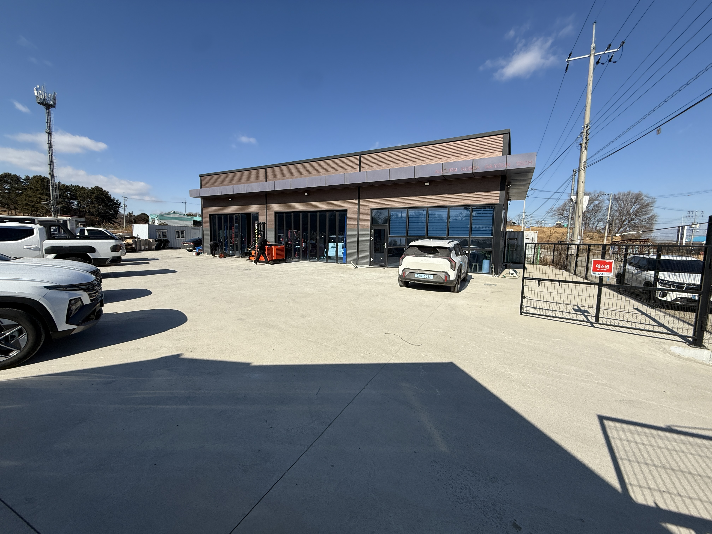
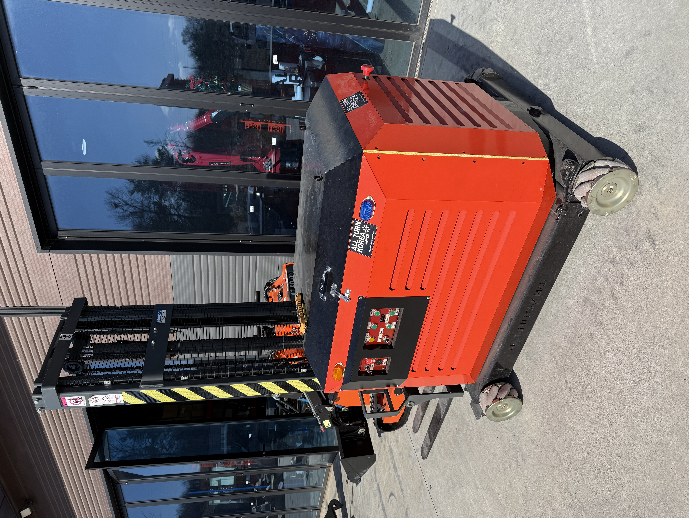
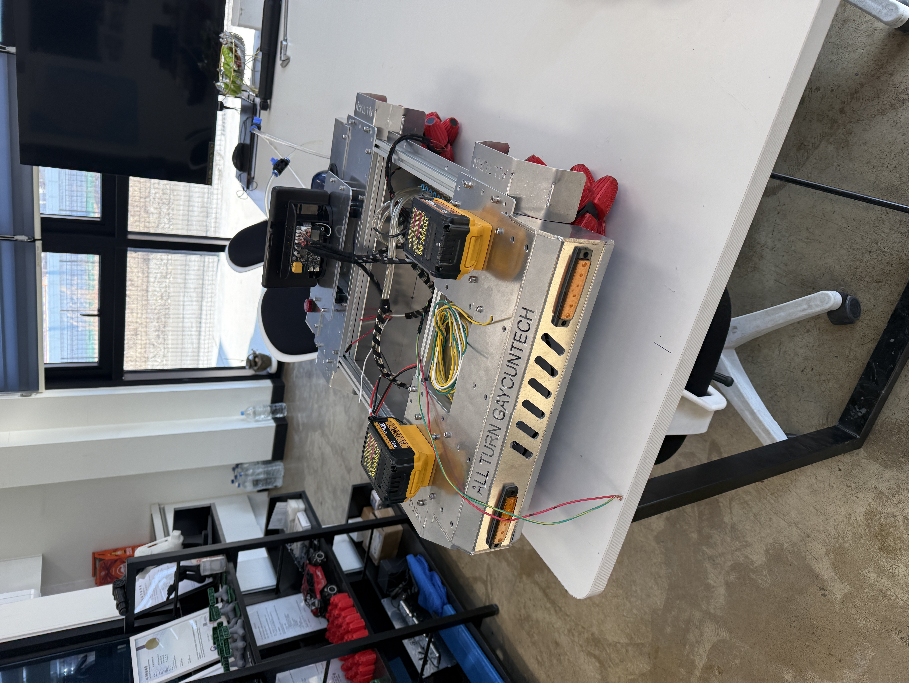

메카넘휠 + AI 결합한 차세대 이동로봇으로 지역 산업 혁신 선도

전북 소재 올턴가연테크 사옥
올턴가연테크는 '말하는 AI'가 아니라 '일하는 AI'를 만드는 회사입니다. 화면 속에만 있는 AI가 아니라, 공장과 현장에서 실제로 움직이며 용접하고, 운반하고, 반복 작업을 수행하는 현장형 인공지능을 개발합니다.
올턴가연테크의 로봇은 촬영할 수 있고, 만질 수 있고, 바로 생산성으로 연결됩니다. 전진, 후진은 물론 옆으로도 움직이고, 제자리에서 빙글 도는 특수 바퀴(메카넘휠)를 달아 좁은 공간에서도 자유롭게 움직입니다.
| 설립 | 2023년 |
|---|---|
| 대표 | 임해진 |
| 소재지 | 전라북도 |
| 한마디로 | 현장에서 일하는 AI 로봇 개발 |

ODIN 지게차 프로토타입 (지금 바로 시연 가능)
물류창고, 공장에서 물건을 나르는 똑똑한 지게차입니다. 좁은 통로에서도 옆으로 움직이고, 제자리에서 방향을 바꿀 수 있어 기존 지게차보다 40% 더 좁은 공간에서도 작업이 가능합니다. 사람을 인식하면 자동으로 멈추는 안전 기능도 갖췄습니다.
| 어디서 쓰나 | 물류창고, 공장, 조선소 |
|---|---|
| 특징 | 제자리 회전, 사람 인식 자동 정지 |
| 상태 | 지금 바로 시연 가능 |

ATOM 교육용 로봇 플랫폼
대학교, 직업훈련원에서 로봇 기술을 배울 때 쓰는 교육용 로봇입니다. 게임 컨트롤러나 스마트폰으로 조종할 수 있고, AI 기능을 추가하면 사람을 따라다니거나 장애물을 피하는 것도 가능합니다.
| 어디서 쓰나 | 대학, 직업훈련원, 연구소 |
|---|---|
| 조종 방법 | 게임 컨트롤러, 스마트폰 앱 |
| AI 기능 | 사람 따라다니기, 장애물 피하기 |
농장, 건설현장처럼 울퉁불퉁한 땅에서도 일하는 로봇입니다. 포장되지 않은 흙길, 경사진 곳에서도 넘어지지 않고 안정적으로 움직입니다. 한국건설기계연구원과 함께 개발 중입니다.
| 어디서 쓰나 | 농장, 스마트팜, 건설현장 |
|---|---|
| 특징 | 울퉁불퉁한 땅에서도 안정적 주행 |
| 상태 | 개발 중 (2026년 4월 완료 예정) |
지금 제조 현장은 두 가지 문제를 동시에 겪고 있습니다. 하나는 숙련 인력 부족, 다른 하나는 청년들이 현장을 기피한다는 점입니다. 사람이 없어서 기계를 못 돌리는 공장이 훨씬 많습니다.
사람을 대체하는 기술이 아니라,
사람이 하기 힘든 일을 대신하고,
사람은 관리·운영·기술 직무로 이동하게 만드는 기술입니다.
단기적으로는 그렇게 보일 수 있습니다. 하지만 현장에서 보면 현실은 다릅니다. 로봇이 들어오면 사라지는 일보다, 새로 생기는 일이 더 많습니다.
결국 일의 형태가 바뀌는 것이지, 일자리가 사라지는 건 아닙니다.
처음에는 반신반의합니다. 하지만 실제로 움직이는 걸 보면 반응이 바로 바뀝니다.
"이건 보여주기용이 아니라 진짜 쓰겠다"
— 현장에서 가장 많이 듣는 말
청년실업의 핵심은 '일자리가 없다'가 아니라 '미래가 보이는 일자리가 없다'는 점입니다.
서울로 가지 않아도, 전주에서도 미래 산업을 다룰 수 있습니다.
아주 명확한 이유가 있습니다.
첨단 기술은 꼭 수도권에서만 시작해야 한다는 생각을 깨고 싶습니다.
지방에서 시작해 전국으로 확산되는 모델을 만들고 있습니다.
단순히 장비를 파는 회사가 아닙니다.
'사람을 대체하는 AI'가 아니라
'사람을 살리는 AI'를 만드는 회사로 기억되고 싶습니다.
AI는 더 이상 먼 미래가 아닙니다.
그리고 그 변화는 책상 위가 아니라 현장에서 시작됩니다.
올턴가연테크는
그 변화를 가장 현실적인 방식으로,
그리고 지역에서부터 만들어가고 있습니다.
본 보도자료는 언론 보도를 위해 작성되었습니다.
추가 취재 및 인터뷰 요청은 상기 연락처로 문의 바랍니다.
© 2026 올턴가연테크(Allturn). All rights reserved.